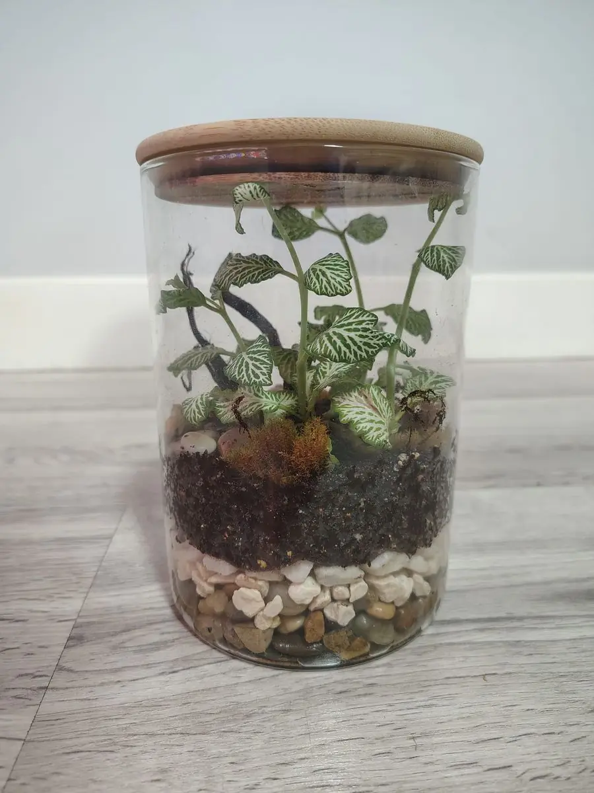
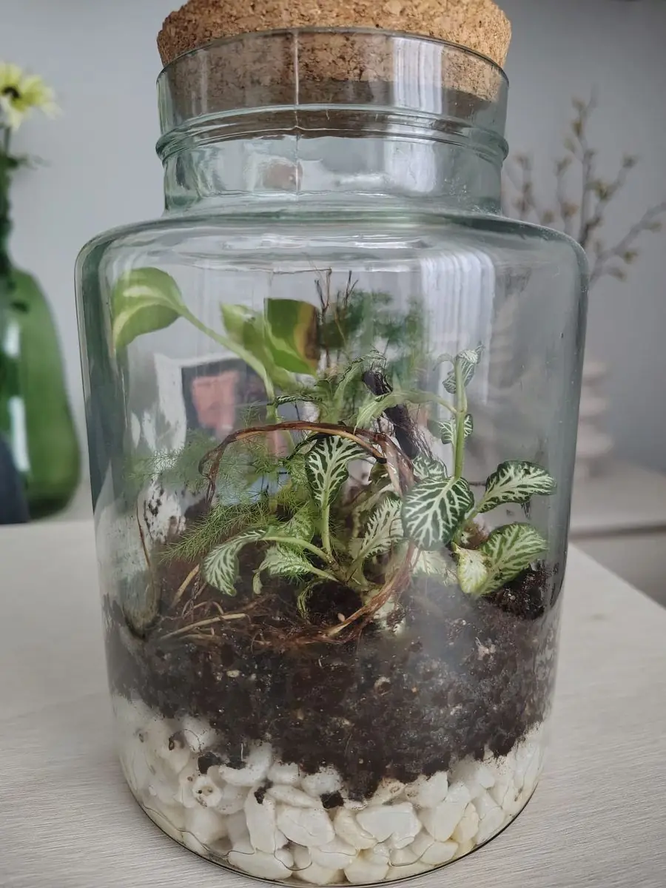

Te lo digo con sinceridad: muchas veces me olvido de que tengo que cuidar mis terrarios. Y no pasa nada, porque un terrario cerrado bien montado aguanta solo muchísimo tiempo. El agua se evapora, se condensa en el cristal y vuelve a caer a la tierra, así que pasan casi todo el año húmedos sin que yo haga nada.
Aun así, hay cuatro cosas que sí hago: regar de vez en cuando, ponerlos con buena luz (y girarlos), abrirlos cuando toca y limpiar el cristal. Te cuento cómo lo hago yo con los míos.

Uno de mis terrarios cerrados. Con muy pocos cuidados se mantiene así todo el año.
1. Riego: cada uno o dos meses (y en verano, más)
Yo riego mis terrarios más o menos cada uno o dos meses. En verano es distinto: hace más calor, se secan antes y los riego cada dos semanas aproximadamente.
Y cuando digo «regar» me refiero a algo muy poco: unas pulverizaciones con un pulverizador y ya. Nada de echar un vaso de agua. En un terrario cerrado el agua no se va a ningún sitio, así que lo que le eches se queda dentro.
Mi truco: olerlo
Para saber si toca regar, abro el terrario y lo huelo. Si huele a bosque húmedo, ese olor a tierra mojada tan característico, está bien y lo vuelvo a cerrar. Si no huele a nada, es que se está secando y toca darle unas pulverizaciones.
2. Luz: mucha, pero nunca sol directo
Los míos están en la mesa principal del salón. Ahí tienen muchas horas de luz al día, pero nunca les da el sol directo. Esto es importante: con el sol directo el cristal hace de invernadero, se calienta muchísimo y las plantas se pueden quemar.
Lo que sí pasa es que las plantas se estiran hacia la luz. Si dejas el terrario siempre en la misma posición, acaban todas inclinadas hacia la ventana. Por eso yo giro los terrarios cada semana: así crecen rectas y el terrario mantiene una forma bonita.
3. ¿Hay que abrir un terrario cerrado?
No hace falta abrirlo todo el rato, pero yo lo abro en dos casos:
- En verano: lo abro un rato para que respire y circule el aire, sobre todo antes de regarlo.
- Cuando hay mucho vaho: si el cristal está tan empañado que no se ve el interior, lo destapo para que salga algo de humedad.
Que el cristal se empañe un poco es normal y es buena señal: es el ciclo del agua funcionando. Lo explico mejor en cómo montar tu primer terrario cerrado.

Abajo se ve la capa de drenaje (las piedras blancas). Si se te va la mano regando, el agua sobrante se queda ahí y no en la tierra.
4. Poda y limpieza
Todavía no he tenido que recortar ninguno. Los terrarios crecen muy despacio, sobre todo los pequeñitos. Cuando una planta crece tanto que toca la tapa, basta con recortarla con unas tijeras, pero a mí de momento no me ha hecho falta.
Lo que sí hago de vez en cuando es limpiar el cristal con un papel húmedo, y ya está. ¿Y las hojas que se mueren o se caen? Las dejo ahí dentro. Son comida para los colémbolos, los bichitos que mantienen el terrario limpio. Te cuento más sobre ellos en colémbolos y bichos bola en el terrario.
5. Mi error: regar de más
El fallo típico, y a mí también me ha pasado: regar de más. Tengo un terrario con el fondo encharcado. En mi caso no pasa nada, porque el agua se ha quedado en la zona de drenaje, donde solo hay piedras y no tierra, así que las raíces no están en remojo.
Para eso precisamente sirve la capa de drenaje: es un margen de seguridad para cuando te pasas con el agua. Por eso es tan importante ponerla al montar el terrario (en mi mezcla de sustrato 50-30-20 te explico las capas). Si el agua llegara a subir hasta la tierra, lo habitual es dejar el terrario destapado unos días para que se evapore el exceso.
Preguntas rápidas
¿Cada cuánto se riega un terrario cerrado? Muy poco. Yo lo hago cada uno o dos meses, y en verano cada dos semanas, siempre con unas pulverizaciones.
¿Cómo sé si le falta agua? Ábrelo y huélelo: si no huele a bosque húmedo, toca regar.
¿Dónde lo pongo? En un sitio con muchas horas de luz pero sin sol directo, y gíralo cada semana para que las plantas no se tuerzan.
¿Hay que abrirlo? No es obligatorio. Yo lo abro en verano para que circule el aire y cuando tiene mucho vaho.

¿Quieres regalar uno esta Navidad?
Hago terrarios cerrados por encargo en la Comunidad de Madrid, desde 25 €.
Ver cómo pedir el tuyo →